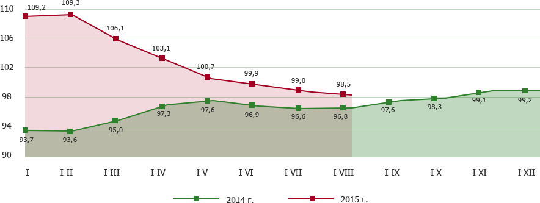

26 ноября 2014 г. в Национальном статистическом комитете Республики Беларусь состоялось II заседание Статистического пресс-клуба на тему: «Индекс потребительских цен: вся правда о расчете».
С приветственным словом выступила первый заместитель Председателя Национального статистического комитета Республики Беларусь Ирина Анатольевна Костевич.
«Наша востребованность на информационном рынке растет, сегодня нами интересуются все. Нам бы очень хотелось профессионально донести статистическую информацию до любого пользователя. Сегодня по Вашему предложению мы проводим IIзаседание, на мой взгляд, по очень интересной и актуальной теме. Мы расскажем, как сегодня производится информация об инфляции: кто это делает, как это делают, какой огромный пласт информации мы поднимаем снизу наверх для того, чтобы получить одну важную цифру, которая характеризует инфляцию.», – отметила Ирина Анатольевна.
На мероприятии присутствовали представители ведущих средств массовой информации.
Для граждан, состоящих на учете нуждающихся в улучшении жилищных условий, введено в эксплуатацию 1 405,1 тыс. квадратных метров общей площади, или 41,2% от общего объема введенного жилья. По сравнению с январем-августом 2014 г. ввод в эксплуатацию жилья для этой категории граждан уменьшился на 323,5 тыс. квадратных метров.
Для граждан, состоящих на учете нуждающихся в улучшении жилищных условий, введено в эксплуатацию 1 405,1 тыс. квадратных метров общей площади, или 41,2% от общего объема введенного жилья. По сравнению с январем-августом 2014 г. ввод в эксплуатацию жилья для этой категории граждан уменьшился на 323,5 тыс. квадратных метров.
Для граждан, состоящих на учете нуждающихся в улучшении жилищных условий, введено в эксплуатацию 1 405,1 тыс. квадратных метров общей площади, или 41,2% от общего объема введенного жилья. По сравнению с январем-августом 2014 г. ввод в эксплуатацию жилья для этой категории граждан уменьшился на 323,5 тыс. квадратных метров.
Для граждан, состоящих на учете нуждающихся в улучшении жилищных условий, введено в эксплуатацию 1 405,1 тыс. квадратных метров общей площади, или 41,2% от общего объема введенного жилья. По сравнению с январем-августом 2014 г. ввод в эксплуатацию жилья для этой категории граждан уменьшился на 323,5 тыс. квадратных метров.
В январе-феврале 2015 г. на строительство жилья использовано 6,8 трлн. рублей инвестиций в основной капитал, что составляет 23,5% к общему объему инвестиций и 142,4% к уровню января-февраля 2014 г. Организациями всех форм собственности построено 9,2 тыс. новых квартир (в январе-феврале 2014 г. – 9,2 тыс.). Введено в эксплуатацию 997,4 тыс. квадратных метров общей площади жилья, что составляет 19,9% к предусмотренному заданию на год и 132,3% к уровню января-февраля 2014 г.
В сельских населенных пунктах введено в эксплуатацию 1 004,4 тыс. квадратных метров общей площади жилья, или 29,4% от общего ввода по республике (в январе-августе 2014 г. – 25,6%).
| Заголовок 1 | Заголовок 2 | Заголовок 3 | Заголовок 4 |
|---|---|---|---|
| Ячейка 1 | Ячейка 2-3 | Ячейка 4 | |
| Ячейка 1 | Ячейка 2 | Ячейка 3 | Ячейка 4 |
| Ячейка 1 | Ячейка 2 | Ячейка 3 | Ячейка 4 |
| Сводная информация | |||
В сельских населенных пунктах введено в эксплуатацию 1 004,4 тыс. квадратных метров общей площади жилья, или 29,4% от общего ввода по республике (в январе-августе 2014 г. – 25,6%).
